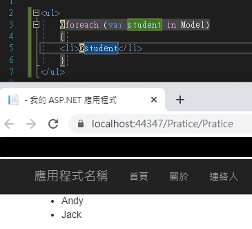

一開始為了學 MVC 時
直接新建 MVC 專案
但是裡面有些東西都看不懂
最近看書理解了一點
紀錄一下
在這邊可以看到 @ 這個符號
這個的意思是 在 cshtml 裡要使用 C# 語法
要加上 @ 才能使用
那在 Controller 及 cshtml 裡都可以看得的 ViewBag 是什麼意思呢
那是 Controller 傳遞資料到 View 的方式
Controller 傳遞資料到 View 的方式有四種
ViewData
為 ViewDataDictionary 型別，key 與 value 成對的 Dictionary
1 | //Controller |
2 | public ActionResult Pratice() |
3 | { |
4 | ViewData["Name"]="Andy"; |
5 | return View(); |
6 | } |
7 | //View |
8 | <a>Name:@ViewData["Name"]</a> |
記得 Controller 的前面單字要跟 View 一樣
ViewBag
dynamic 動態型別 Property，內部為 DynamicViewDataDictionary 型別
1 | //Controller |
2 | public ActionResult Pratice() |
3 | { |
4 | ViewBag.Name="Andy"; |
5 | return View(); |
6 | } |
7 | //View |
8 | <a>Name:@ViewBag.Name</a> |
Model
為廣義的資料模型，集合、陣列或物件都可做為 Model 傳遞至 View
1 | //Controller |
2 | public ActionResult Pratice() |
3 | { |
4 | List<string> students = new List<string>(); |
5 | students.Add("Andy"); |
6 | students.Add("Jack"); |
7 | ViewData.Model = students; |
8 | return View(); |
9 | } |
10 | //View |
11 | <ul> |
12 | @foreach (var student in Model) |
13 | { |
14 | <li>@student</li> |
15 | } |
16 | </ul> |

TempData
TempDataDictionary 型別，也是key 與 value 成對的 Dictionary
差別在因為用來跨 Controller/Action 傳遞資料，資料儲存在 Session 不會因為網頁轉向而消失
1 | //Controller |
2 | public ActionResult Pratice() |
3 | { |
4 | TempData["Message"] = "到餐廳"; |
5 | //(Action 名稱,Controller 名稱) |
6 | return RedirectToAction("Restaurant", "Restaurant"); |
7 | } |
8 | public ActionResult Restaurant() |
9 | { |
10 | //檢查是否有 key |
11 | if (!TempData.ContainsKey("Message")) |
12 | { |
13 | //不回傳任何東西 |
14 | return new EmptyResult(); |
15 | } |
16 | //系統保留 TempData 資料 |
17 | TempData.Keep(); |
18 | //保留指定資料 |
19 | //TempData.Keep["Message"]; |
20 | return View(); |
21 | } |
22 | //View |
23 | //Restaurant.cshtml |
24 | <a>到哪了:@TempData["Message"]</a> |
這次的紀錄就到這~